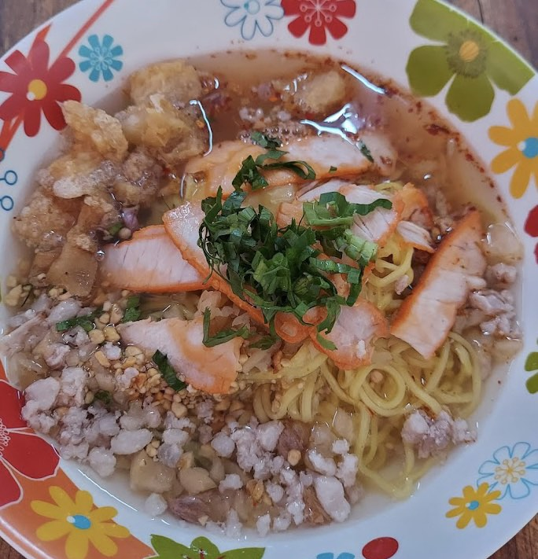

รวม 5 ร้านก๋วยเตี๋ยว ของขึ้นชื่อสุโขทัยต้องเเวะไปลอง!
ถ้าหากมาสุโขทัย แล้วไม่รู้จะกินอะไร ขอเเนะนำเลยว่า "ก๋วยเตี๋ยว" ถือเป็น ของขึ้นชื่อสุโขทัยเลยก็ว่าได้
กับความเป็นเอกลักษณ์เฉพาะตัว ก๋วยเตี๋ยวหมูแดงที่มีการใส่ถั่วฝักยาวลงในก๋วยเตี๋ยว กับน้ำซุปที่เข้มข้นอร่อยกลมกล่อมสุดๆ
และไม่เพียงมีเเค่ก๋วยเตี๋ยวสุโขทัยเท่านั้นยังมีก๋วยเตี๋ยวต้มยำ ก๋วยเตี๋ยวนำตก ก๋วยเตี่ยวไก่ตุ๋น และอื่นๆให้เลือกทานอย่างจุใจ
เราได้รวบรวมร้านก๋วยเตี๋ยวที่อร่อยแบบไม่ต้องปรุงถูกปากใครหลายๆคนเเน่นอน รับลองเลยว่าหากได้ชิมเเล้วคิดถึง "สุโขทัย"
ก๋วเตี๋ยวชายทุ่ง
ร้านก๋วยเตี๋ยวชื่อดังทุ่งเสลี่ยม ร้านอยู่ที่ ต.กลางดง อ.ทุ่งเสลี่ยม น้ำซุปเข้มสุดๆ อร่อยเบบไม่ต้องปรุงมีอยู่จริง
ก๋วยเตี๋ยวเจ๊ทุมทุเลาใน
เป็นร้านเล็กๆ ตั้งอยู่ที่ บ้านแม่ทุเลาใน ต.ทุ่งเสลี่ยม แต่รสชาตินั้นไม่เล็กอร่อยมาก ใครได้ลองบอกเลยติดใจ
ก๋วยเตี๋ยวเจ๊นิด
ร้านอร่อยอีกที่ของทุ่งเสลี่ยม อยู่ติดกับวัดเหมืองนา บอกเลยว่าของอร่อยเเละถูกมีอยู่จริงเริ่มต้นที่ 25 บาท เท่านั้น!!

ก๋วยเตี๋ยวสุโขทัยเจ๊แฮ
ร้านชื่อดังเมืองสุโขทัย ตั้งอยู่ที่ถนนจรดร่องวิถี ต.บ้านกล้วย เป็นก๋วยเตี๋ยวที่อร่อยเเละต้องถูกใจใครหลายๆคนเเน่นอน

ก๋วยเตี๋ยวสุโขทัยโป๊ะเป๊ะ
ร้านตั่งอยู่ที่ ถนนศรีสมบูรณ์ ตำบลธานี อำเภอเมืองสุโขทัย ร้านนี้มีหลากหลายเมนูให้เลือกทานบอกเลยว่าอร่อยทุกเมนู